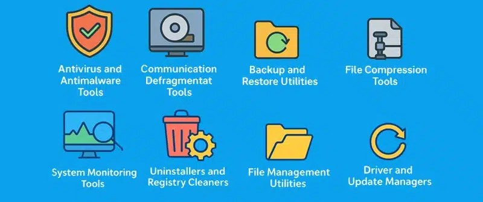

Utility programs are software tools that help manage and maintain computer systems. They perform tasks such as file management, system monitoring, data backup, and security.
Unlike application software (such as web browsers or word processors) which directly serves the user, utility programs work behind the scenes to support the operating system and hardware infrastructure.